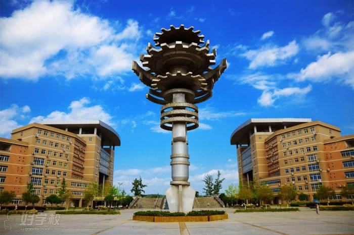

本站首页
本站首页
 关于本校
关于本校 师资团队
师资团队 历史足迹
历史足迹 学院展示
学院展示 一睹风采
一睹风采
西南科技大学https://70th.swust.edu.cn/
初次见面，正在人间奋斗的你！
欢迎来到
西南科技大学
祝|贺 七|十|周|年
西南科技大学
热烈祝贺母校70年校庆
以梦为马，不负韶华
学/校/简/介
校名：西南科技大学
官网：http://www.swust.edu.cn/
成立时间：1952年
优秀学科：自动化、环境工程、地质工程
地址：四川省绵阳市涪城区青龙大道中段59号
招生电话：0816-6089071
校训：厚德博学，笃行创新
占地：5463亩
展望：西南明珠出沧海，桃李春风物华新
🟡学/校/介/绍
西南科技大学坐落于中国科技城——四川省绵阳市。学校是四川省人民政府与教育部共建高校，四川省人民政府与国家国防科技工业局共建高校，被教育部确定为国家重点建设的西部14所高校之一。原中央政治局常委，国务院副总理李岚清同志赞誉学校“共建与区域产学研联合办学”走出了一条有自己特色的办学路子。学校现任党委书记董发勤、校长黄琦。
并成立的重庆建筑工程学校。学校曾在重庆、石棉、绵阳三地办学，1978年四川建筑材料工业学院迁至原清华大学绵阳分校校址，清华大学绵阳分校部分职工及办学资源并入学院。1993年更名为西南工学院。
2000年，原西南工学院与绵阳经济技术高等专科学校合并组建西南科技大学。学校校园现占地5463亩，环境优美，设施完善，是读书治学的好地方。学校现有建筑面积119万平方米，固定资产总值27亿元，教学科研仪器设备值已达8.87亿元。学校图书馆建筑面积3.78万平方米，藏有纸质图书253万余册，电子图书756万余册。
学校现有在校研究生、普通本专科学生、外国留学生3.9万余人。设有国防科技学院等16个学院，在工学、农学、理学、经济学、法学、文学、管理学、教育学、艺术学等9大学科门类，设有本科专业83个；有一级学科博士学位授权点5个，二级博士学位授权点18个；一级硕士学位授权点24个，二级学科硕士学位授权点88个；硕士专业学位类别15个。博士后科研流动站1个，有4个学科方向与中国工程物理研究院等开展联合培养博士研究生。有四川省“双一流”建设学科（群）2个、省级优势学科4个、省级重点学科11个，有国防科工局批准的国防基础学科1个、国防特色学科方向5个。材料科学、工程科学、化学、环境/生态学科4个学科进入ESI排名前1%，其中材料科学、工程科学和化学3个学科进入ESI排名前5‰。
学校现有教职工2690余人，其中：正高级职称人员324人，副高级职称人员629人；有博士生、硕士生导师875人；从董事单位等聘任院士15人；有“百千万人才工程”国家级人选、“长江学者奖励计划”青年项目、国家优秀青年基金获得者、“教育部新世纪人才计划”人选、享受国务院政府特殊津贴专家、四川省有突出贡献的优秀专家、四川省学术和技术带头人及后备人选、四川省教学名师等200余人次。有“核废物环境下的生物效应”“核应急环境安全智能感知与预警”国家国防科技创新团队2个，“碳纳米材料”“特种高分子”“军民融合研究”等8个省部级科技创新团队，以及“光电检测技术与研究”等17个四川省教育厅创新团队。
学校有省部共建国家重点实验室1个，国家大学科技园1个，省部共建协同创新中心1个，国家绝缘材料工程技术研究中心（共建）１个，国家遥感中心绵阳科技城分部1个，有国防重点学科实验室1个、教育部重点实验室2个、教育部工程研究中心1个，有四川省重点实验室3个，四川省工程技术研究中心4个，四川省国际科技合作基地2个，四川省工程实验室3个，四川省协同创新中心3个，四川省科技资源共享服务平台1个，四川省军民两用技术转移和产业孵化中心等。有四川省高校重点实验室10个。 有教育部国别和区域研究培育基地1个，首批四川新型智库1个，有四川省哲学社会科学重点研究基地等省级研究平台5个、省社科普及基地2个。近年来，学校完成了多项国家重大专项、“973”“863”计划、国家科技支撑计划、国家自然科学基金重点项目、国家重大仪器专项、国防重点项目、国家社科基金项目等，获得国家科技进步二等奖等国家级和省部级科技奖励240余项。学校在2020年自然指数中国内地高校TOP200中居第125位（四川省属高校第1位）。
学校有光电子技术、液压与气压传动、思想政治理论课实践教学等国家级、省级一流课程32门，每年面向本科生、研究生开出各类课程3000余门。电子技术与创新、化学实验教学等国家级和省级高校教学团队8个，机械设计制造及其自动化等7个国家级卓越人才教育培养计划专业。在2021年中国高等教育学会公布的2012-2020全国普通高校教师竞赛状态数据排行榜中，西南科技大学居全国44位（四川省属高校第2位）。有材料科学与工程、自动化、环境工程等6个国家特色专业建设点，电子信息工程专业为国防重点专业，辐射防护与核安全专业为国防紧缺专业，有38个国家和四川省一流专业，土木工程等7个专业通过国家工程教育专业认证（评估），有2个国家级和12个省级实验教学示范中心和虚拟仿真实验教学中心。学校创新创业教育成效显著，学生在全国“挑战杯”“数学建模”“大学创业大赛”等科技文化体育大赛及学科竞赛中屡获佳绩；学校机器人小组荣获全国大学生机器人大赛冠军、最佳技术奖，亚太地区亚军、最佳技术奖。在2019年中国高等教育学会公布的2015-2019“中国高校创新人才培养暨学科竞赛评估”结果中，学校荣登百强校之列，居全国第67位（四川省属高校第1位）。在2020全国普通高校大学生竞赛排行榜第五轮总排行榜中居第58名（位列全省第4位，省属高校第1位）。学校构建了覆盖所有高等学历继续教育形式和非学历教育的全民终身学习服务体系，是全国现代远程教育试点高校、全国高等学校继续教育示范基地、高等教育自学考试全国示范服务中心、四川省专业技术人员继续教育基地。
西南科技大学国家大学科技园已建设成为“国家技术转移示范机构”、“国家级科技企业孵化器”、“国家级高校学生科技创业实习基地”、“四川省大学生创新创业示范俱乐部”。学校是四川省全面创新改革试验定点联系高校之一，联合组建成立了“四川省军民融合研究院”，在国防科技人才培养、协同创新、技术转移和区域特色高端智库方面深入推进军民融合。学校拉美研究中心研究成果积极服务国家拉美战略，获得刘延东副总理充分肯定。学校充分发挥在环境友好能源材料、先进建筑材料、控制工程与智能系统、特殊环境机器人技术、环境安全技术、城市污水和固体废物处理及资源化、核废物处理处置技术、农业生物质资源循环利用等科研特色和传统优势，服务经济社会发展，产生社会经济效益上百亿元。
学校与美国、英国、加拿大等30余所国（境）外高校和科研机构建立了广泛的合作与交流联系，特别加强了与“一带一路”沿线国家在教学、科研以及人才培养等领域全方位、多层次的国际合作与交流，学校教育国际化水平加快提升。
🟡校史
1939年，江津窑业技术学校。1949年，江津窑业技术学校更名为川东区江津窑业技术学校（隶属西南军政委员会文教部）。 1950年，川东区江津窑业技术学校更名为西南工业部干部学校（隶属关系同上）。西南工业部干部学校更名为西南建筑工程学校（隶属关系同上）。 1958年，重庆建筑工程学校升格为重庆建筑材料专科学校（隶属中央建筑工程部）。1962年，校名改名为重庆建筑材料工业学校（隶属中央建筑工程部）。 1964年，更名为四川非金属矿山半工半读中等技术学校（隶属建筑材料工业部）。1974年，学校搬迁到绵阳，更名为四川建筑材料工业学校（隶属关系同上）。 1978年初，经国务院批准学校升格为四川建筑材料工业学院（隶属国家建筑材料工业局），随后学校搬迁至原清华大学绵阳分校校址办学。 1993年，原国家教委批准该校改变领导管理体制并更名为西南工学院（隶属国家建筑材料工业局）。1998年，绵阳市纺织技工学校、绵阳市丝绸技工学校并入西南工学院。 1952年，四川省遂宁农业学校。1978年，学校搬迁到绵阳，在原四川绵阳农学院校址办学，更名为绵阳农业高等专科学校。1995年，学校更名为绵阳经济技术高等专科学校。 合并建校 2000年8月23日，经国务院批准由西南工学院和绵阳经济技术高等专科学校合并组建西南科技大学。2000年12月21日，正式挂牌成立西南科技大学。2001年，学校成为国家重点建设的西部高校14所之一。
🟡校风
坚持跟着党的领导，服从党的召唤，努力争做新时代，世界巨变之中的排头兵
风/景/一/览
我校美景
最/新/讯/息
--- 暂时先展示这么多 ---
🌹西南科技大学
教育天团
2022-
我们是黑暗中照亮书本的明灯，光明下抒写思绪的墨笔。
1939年
江津窑业技术学校
1949年，江津窑业技术学校更名为川东区江津窑业技术学校（隶属西南军政委员会文教部）。1950年，川东区江津窑业技术学校更名为西南工业部干部学校（隶属关系同上）。西南工业部干部学校更名为西南建筑工程学校（隶属关系同上）。
1952年
西南建筑工程学校
西南建筑工程学校、重庆第一土木建筑学校合并组建重庆建筑工程学校（隶属关系同上）。1958年，重庆建筑工程学校升格为重庆建筑材料专科学校（隶属中央建筑工程部）。
2000年8月23日
西南科技大学
经国务院批准由西南工学院和绵阳经济技术高等专科学校合并组建西南科技大学。2000年12月21日，正式挂牌成立西南科技大学。2001年，学校成为国家重点建设的西部高校14所之一。根据教育部“对口支援西部地区高等学校计划”部署和教高〔2001〕2号文件要求，2001年7月，中国科学技术大学与西南科技大学正式签署了对口支援协议，开始正式实施对口支援西南科技大学计划。
1939年
川东区江津窑业技术学校
溯源于1939年抗日战争期间创办的四川江津窑业技术学校与四川省立高级农业职业学校。
校址为原清华大学绵阳分校。建校以来，学校几经搬迁，走过了创业、发展、壮大的不平凡历程。跨入新世纪，学校在西部大开发和绵阳科技城建设的历史机遇中焕发出新的生机。学校发展成为国家重点建设的西部14所高校之一，全国现代远程教育试点学校，全国文明单位。学校拥有国家大学科技园，是四川省人民政府与国家教育部、工业和信息化部共建高校。
1952年
西南建筑工程学校
西南建筑工程学校、重庆第一土木建筑学校合并组建重庆建筑工程学校（隶属关系同上）。
1958年，重庆建筑工程学校升格为重庆建筑材料专科学校（隶属中央建筑工程部）。
2000年8月23日
西南科技大学
西南科技大学(Southwest University of Science and Technology)简称“西南科大”。
坐 落于中国科技城-四川省绵阳市，由教育部、国家国防科技工业局和四川省人民政府共建， 是国家西部重点建设十四所高校之一，四川省全面创新改 革试验定点联系高校之一， 入选 国家“中西部高校基础能力建设工程”、四川省“双一-流建设计划、教育部卓越工程师教育培 养计划、“双万计划”、 国家级大学生创新创业训练计划、国家级新工科研究与实践项目、四 川省卓越法律人才教育培养计划、四川省卓越农林人才教育培养计划、四川2011计划。

学校院系
西南科技大学
国防科技学院
西南科技大学
计算机科学与技术学院
西南科技大学
理学院
![[]](img/nav05_zp04.jpg)
西南科技大学
土木工程与建筑学院
西南科技大学
经济管理学院
西南科技大学
外国语学院
西南科技大学
信息工程学院
西南科技大学
欢/迎/查/阅
学院、校友、学生风采
-
这里是第一张
-
这里是第二张
-

这里是第三张
-
这里是第四张
-
这里是第五张
--- 已经到底 ---